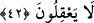
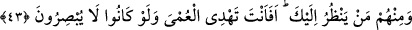

42. İçlerinden sana kulak verip dinleyenler de vardır. Fakat sağırlara sen mi
duyuracaksın? Hele akıllarını da kullanmıyorlarsa!
“İçlerinden” yalanlayanların arasında kendilerine Kur’ân okuduğun, şer’î prensipleri
öğrettiğin zaman “sana” zâhir kulağıyla “kulak verip dinleyenler de vardır.”
Kalblerinin kulağında ise dünya ve şehevânî isteklere duydukları sevgi yüzünden
sağırlık vardır. Çünkü bir şeye muhabbet beslemek, başka şeylere kör ve sağır yapar.
“Fakat sağırlara sen mi duyuracaksın?” cümle inkârî bir cümledir. Yâni, seni
dinleyecekler mi de onlara duyuracaksın? Allah Teâlâ, kötü amelleri yüzünden onları
sağırlaştırmışken mi onlara duyuracaksın?
Burada kötü görülen, müşriklerin kulak vermeleri değil, Hz. Peygamber’in onlara
duyurmasıdır. Çünkü onların kulak vermeleri zâten gerçekleşmiş bir durumdur.
“Hele akıllarını da kullanmıyorlarsa!” Yani sağırlıklarına bir de akıllarını
kullanamamak ekleniyorsa. Çünkü akıllı bir sağırın kulağına bir ses ulaştığı zaman bir
şeyler anlayabilir. Ama bir insanda hem akılsızlık hem de sağırlık bir arada bulunursa,
onun işi bitmiş demektir.
43. İçlerinden sana bakanlar da var. Fakat körleri sen mi yola getireceksin? Hele
bir de basiretsiz iseler!
“İçlerinden sana” his bakışıyla “bakanlar,” basiretlerinde körlük bulunduğu halde
senin peygamberliğinin delillerini görenler “de var. Fakat körleri sen mi yola
getireceksin?” Bundan sonra onları sen mi doğru yola ileteceksin? “Hele bir de
basiretsiz iseler!” Yani, körlüklerine bir de basiretsizlik ekleniyorsa! Çünkü görmenin
gayesi, görüp ibret almaktır. Bunun esası da basirettir. Bu sebepledir ki basiretli bir kör,
ahmak bir görenin kavrayamadığı şeyleri sezip anlar. Kendilerinde ahmaklıkla körlüğün
aynı anda bulunduğu kişilere doğru yolu bulma kapısı kapanmıştır.
Allah Teâlâ yalanlamakta ısrar edenleri, körlere ve sağırlara benzetiyor. Çünkü
bunların Hz. Peygamber (s.a.)’e duydukları şiddetli kızgınlık ve nefret, kendilerini
O’nun sözlerinin güzelliğini anlamaktan, peygamberliğini gösteren delilleri görmekten
alıkoymaktadır. Nitekim kulaktaki sağırlık sözlerin güzelliğini anlamaktan alıkoyar,
gözde bulunan körlük ise sûret güzelliğini müşâhede etmeye engel olur. Cenab-ı Hak
bâtını zâhire üstün tutarak akılsızlığı sağırlıkla, kavrayışsızlığı ise körlükle birlikte